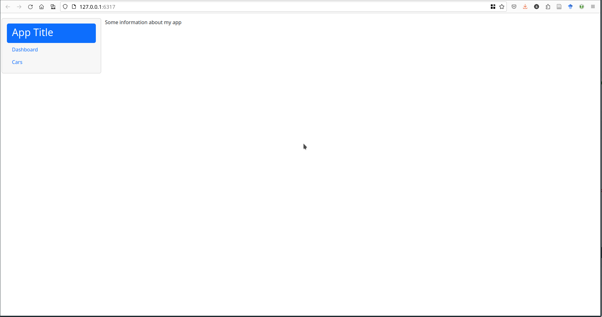
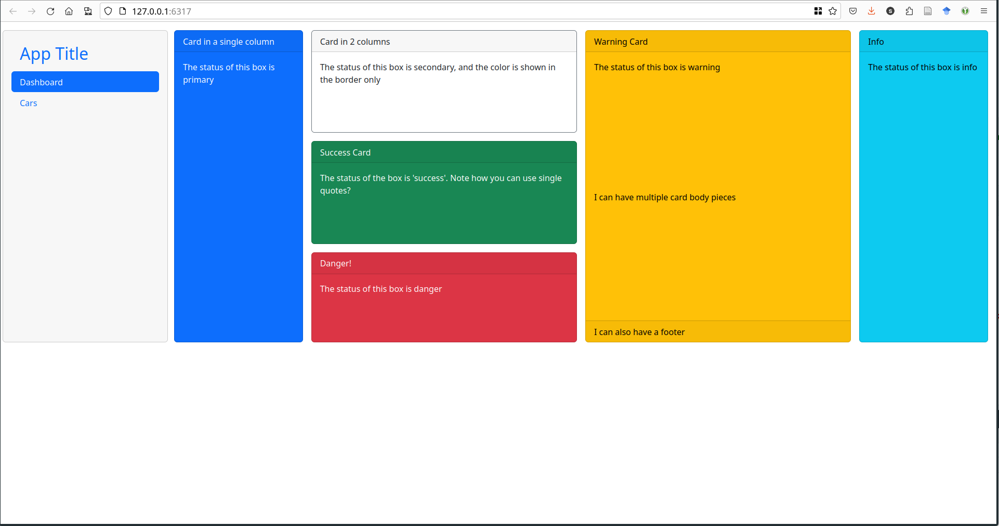
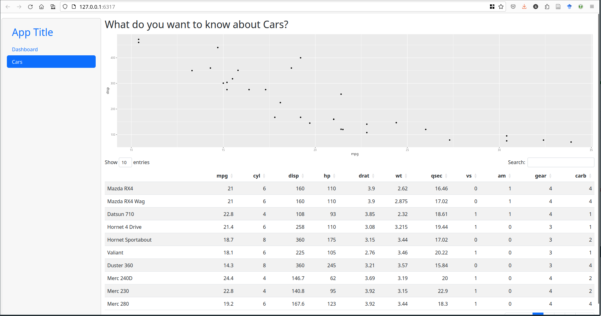
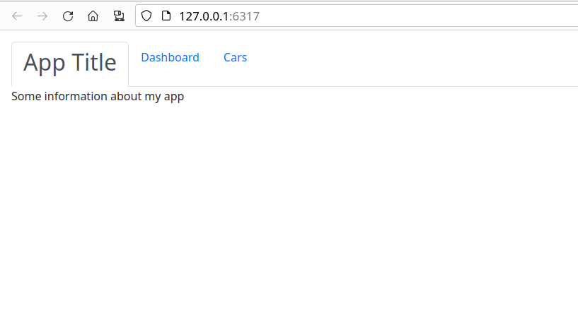
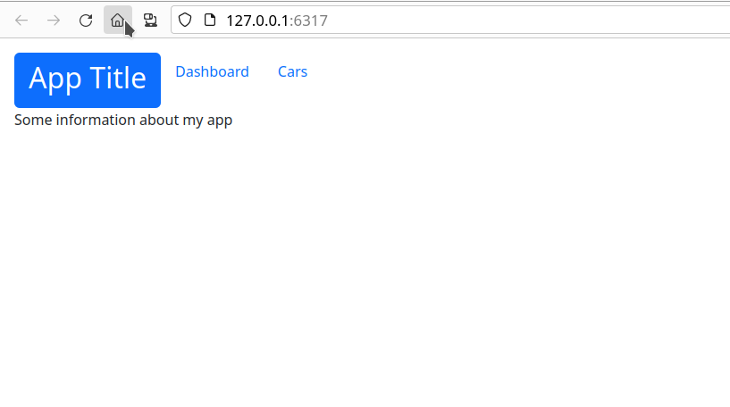
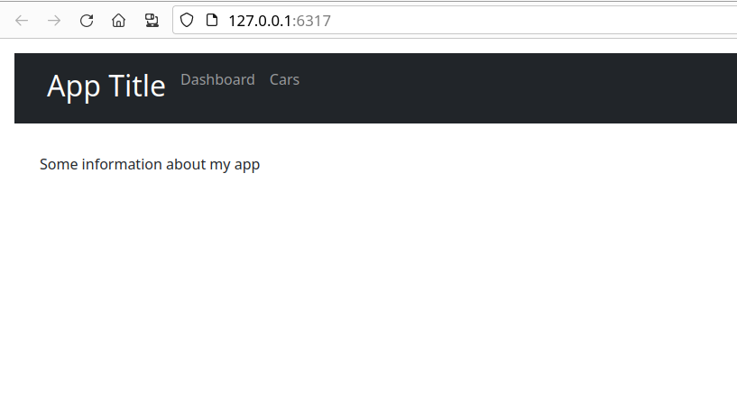
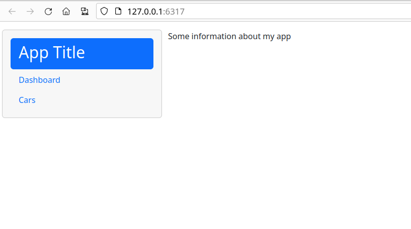
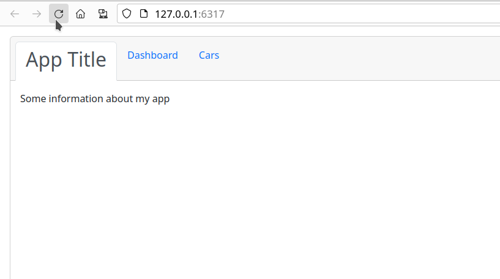
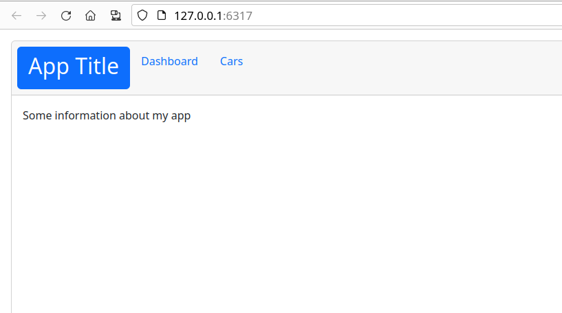

Error in `library()`:
! there is no package called 'leaflet'Reactivity
SISBID 2025
https://github.com/dicook/SISBID
Elements of Reactivity
- Sources
- Any input widget is a source
- Conductors
- Use input and pass values to another component
- Observers
- Any output is an observer
{kind=link}
Two Conductors
- Reactive expressions and reactive events are two types of conductors
- Reactive expressions are the archetypical conductor:
- envelope functionality used in multiple places of an app
- run evaluations only once
- store current values
- update when inputs change
- Reactive events are only triggered by specific events (e.g. click on an action button)
Reactive Expressions
rval <- reactive({
...
})Called like a function as rval()
- Reactive expressions are executed lazily and values are cached
- Lazy: Evaluated on demand as requested by a reactive endpoint
- Cached: (re-)evaluated only when the value of a dependency changed
Reactive Events
rval <- eventReactive(actionbutton, {
...
})Called like a function as rval()
- reactive events are executed even more lazily
- only on demand
- requested by an actionButton (usually)
- only on demand
Example: Submission Form
- In RStudio open file
app.Rin03_submission
- Run the app (a couple of times)
- Turn on showcase mode:
runApp("code/3.3-apps/03_submission/",
display.mode = "showcase"){kind=link}
Your turn
- Open the file
03_submission.R - The package
colourpickerimplements a color wheel as an input widget - Allow users to change the color of the dots in the dot plot
- What other interactive elements can you think of adding?
Answers are in 03b_submission.R

Conditional Panels


- Showing a color picker before it is needed could confuse app users
conditionalPanel(condition, ...)allows us to encapsulate elements of the UI and only show them whenconditionis fulfilled
- Here, a condition of
condition = 'input.submit > 0'is true when the submit button was pressed at least once.
- This is implemented in
03c_submission.R
App Layout
- The body is laid out using a responsive grid
- responsive: adapts to different screen sizes
- different on a cell phone than a laptop
- boxes are rearranged automatically
- Structure is introduced by cards
card1 <- card(
card_header("Hi, I'm a card"),
class = "bg-primary",
"I contain some information - ",
"text, plot, image, input area...",
"your choice!")

Cards
04_layout.R
- Cards help with structuring output
- Cards have a
classparameterbg-xxxproduces a colored boxborder-xxxproduces a box with a colored outlinecard_header(..., class = "bg-xxx")produces a box with a colored header?validStatuses, represented byxxxabove, areprimary,secondary,success,info,warning,danger,light,dark

Nested Layouts
- Body is wrapped in a
page_fillablefunction - Cards are aligned using columns
- Additional rows can be created by nesting
layout_columns()functions
body <- page_fillable(
layout_columns(
col_widths = c(2, 4, 4, 2), # 12 cols per row
row_heights = "600px",
card1,
layout_columns(card2, card3, card5,
col_widths = c(12, 12, 12),
row_heights = "auto"),
card4, card6)
)04_layout2.R

Nested Layouts
- Body is wrapped in a
page_fillablefunction - Cards are aligned using columns
- Additional rows can be created by nesting
layout_columns()functions
body <- page_fillable(
layout_columns(
col_widths = c(2, 4, 4, 2), # 12 cols per row
row_heights = "600px",
card1,
layout_columns(card2, card3, card5,
col_widths = c(12, 12, 12),
row_heights = "auto"),
card4, card6)
)04_layout2.R

Other Layouts
page_fillable()has different behavior frompage_fluid()andpage_fixed()- see this article for more information about fillable containers.page_navbar()can be used to create tabs across the top (more on this in a minute)sidebar()allows for common inputs across all tabs
layout_column_wrap()can accomplish some very neat tricks
layout_column_wrap(
width = NULL, height = 300, fill = FALSE,
style = css(grid_template_columns = "2fr 1fr 2fr"),
card1, card2, card3
)- Shiny UI Editor is currently in Alpha but allows UI creation without writing code
Tab Layouts
Code: 05_tabsets.R tab1   
Tabs
- Different options for multi-page applets:
navset_tab()
navset_pill()
navset_bar()
navset_pill_list()
navset_card_tab()
navset_card_pill()
Your Turn
Modify the code in 05_tabsets.R to use a page_navbar().
- What modifications do you have to make?
- Can you add a sidebar using the
sidebar()function?
Resources
- RStudio Tutorial: https://shiny.rstudio.com/articles/reactivity-overview.html
- Shiny Cheat Sheet: https://raw.githubusercontent.com/rstudio/cheatsheets/master/shiny.pdf
- Gallery of Shiny Apps: https://shiny.rstudio.com/gallery/
- bslib documentation: https://rstudio.github.io/bslib/
 This work is licensed under a Creative Commons Attribution-NonCommercial-ShareAlike 4.0 International License.
This work is licensed under a Creative Commons Attribution-NonCommercial-ShareAlike 4.0 International License.